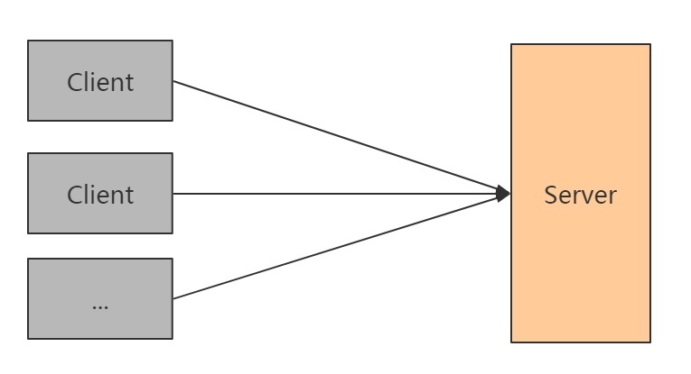
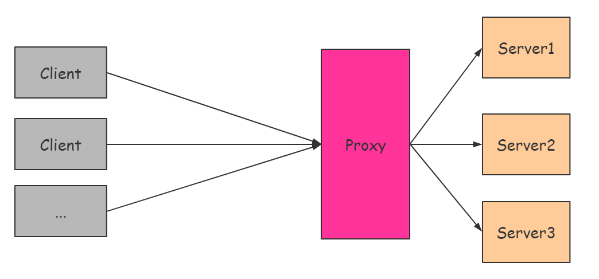
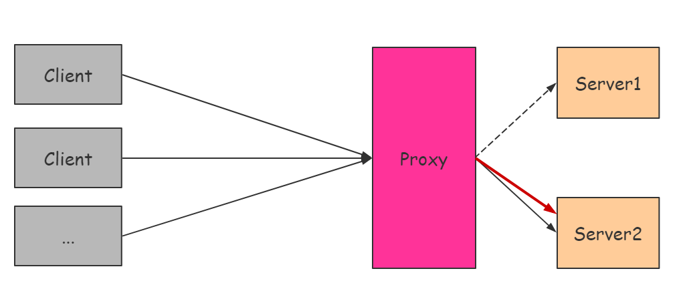
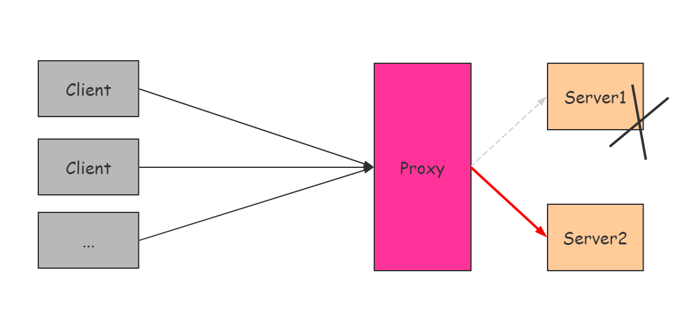
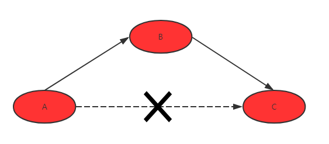
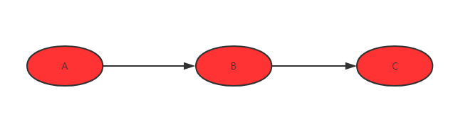
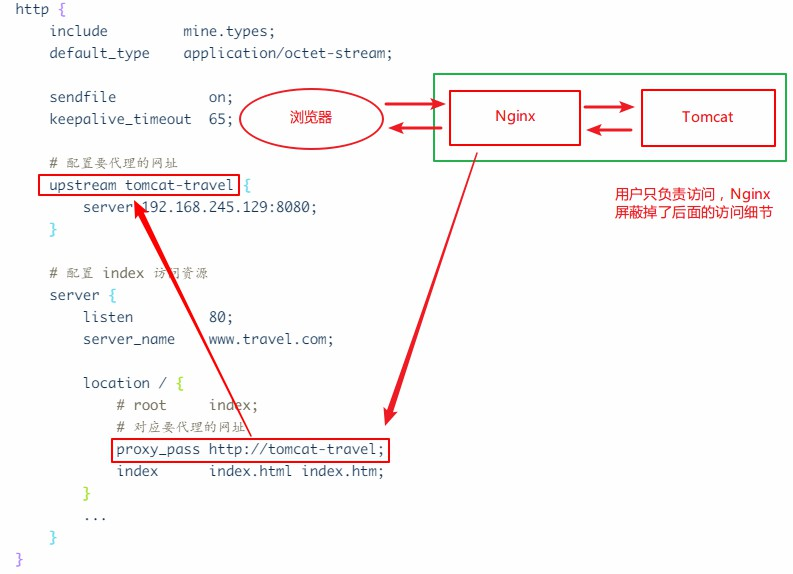
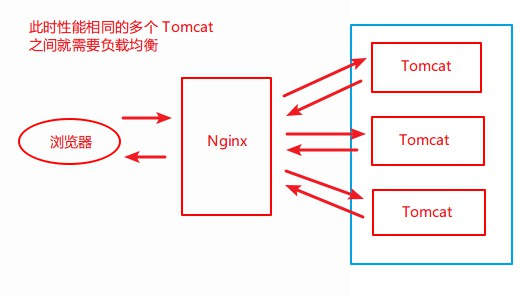

在认识、学习 Nginx 之前，我们先来看一下代理是什么，如果你已经非常熟悉代理，可以直接跳到第二个章节。
关于代理1
*注：该节原创发布于慕课网，作者：咚咚呛。
要说清楚什么是反向代理，先来了解下最简单的 C/S （Client-Server）架构，即以单个节点作为后端 Server 的 C/S 架构。
单点服务的 C/S 架构
在普通的开发中，单点 Server 的服务方式非常常见，比如使用 Django 框架做后台服务的时候，就可以通过简单的 =run server= 命令起一个临时的服务，接着通过地址就可能访问到这个服务了。
当然，对于 Django 而言，
run server命令只是提供开发周期的调试使用的便捷工具，更一般的情况是通过 uWSGI 把这个 Django 服务跑起来，以获取比run server更好的服务性能。
对于请求量非常少的服务，这样的部署不会有什么问题，但随着服务请求量越来越多，这样的部署架构就很有问题了。
首先，从服务器的物理特性来看，这个服务器可能就不能支持这么高的请求量。 这种情况下，就迫使开发者去把服务迁移到一个 CPU 更强、内存更高，综合性能更好的服务器。
其次，如果服务 Server 单节点发生了故障，就必然会影响整个服务。 因为对于众多的 Client 客户端都是连接的一个 Server 服务端，一旦这个节点不可用了，势必会影响所有使用了客户端的用户。
那么，如何解决这两个显而易见的问题呢？
如果有一种横向拓展架构，使得服务可以支撑的请求量可以随着服务的横向拓展面增加就好了。
基于代理的 C/S 架构
一种基于代理的可横向拓展的 C/S 架构，如下：
在这个部署的架构中，除了 Server 节点外，还多出一个叫 Proxy 的节点，这个节点的做什么的呢？
Proxy 节点，用于把接收的所有请求都转发到它后面的 Server 节点中，然后等待 Server 节点处理请求，再从 Server 节点取回执行结果返回到 Client 。所以，实际上 Proxy 节点不处理任何的请求。
下面让我们来看一下，这种架构是怎么解决了上述问题的，之后再思考 Proxy 的这个角色。
1. 服务器性能不足的问题
在这个架构里，假设 Server 节点 S1 性能到达瓶颈了，不能处理更多请求了。我们可以添加 Server 节点 S2 ，同时告诉 Proxy 节点，让它把部分原来转发到 S1 节点的请求转发到 S2 节点。如此，通过服务分流减少压力的方法就可以解决原来 S1 节点性能不足的问题了。
2. 单点服务器挂掉的问题
在这个架构里，假设 Server 节点 S1 和 S2 能够提供的服务是一样的。如果 S1 挂掉了，Proxy 节点存在，且能够察觉到 S1 挂掉了的话，就让 Proxy 节点把原来要转发给 S1 节点的请求转发到 S2 进行处理，如此，通过服务冗余的方法就可以解决原来 S1 突然挂掉影响服务的问题了。
那么，Proxy 节点到底是什么呢？
Proxy 是什么
Proxy ，就是代理。 如何理解呢？
在第一个问题中，Proxy 节点通过服务分流的方法来减少 S1 的压力。对于原来应该被 S1 服务的，却由于被 Proxy 节点转发而被 S2 服务的 Client 客户端而言，其实 Client 并不知道它的请求是由 S1 处理的，还是由 S2 处理的，它只需要往 Proxy 节点发送请求就好了，剩下的工作就由 Proxy 节点去解决了。
也就是说，Proxy 节点相当于一个中介，“代理” Client 去寻找实际的 Server 节点去完成服务。
这种模式在现实生活中也非常常见，在买房的时候，通常由房产中介帮助你完成和卖者之间的手续，而不需要你亲自去处理这些事情，你只需要处理自己与中介之间的手续就可以了，这里的中介，就和我们的 Proxy 节点工作非常类似。
同样的，在第二个问题中，Client 并不需要感知 S1 是否还能正常工作，只需要把请求发送给 Proxy 节点，由它去帮忙处理就可以了。
由上可知，基于代理的可横向拓展的 C/S 架构中，Proxy 节点就是我们的代理节点。
正向代理和反向代理
所谓“正向代理”其实应该称为“客户端代理”，而“反向代理”应该称为“服务端代理”。
本质上来讲，代理都是存在于 Client 和 Server 之间，但是由于性质不同，可以分为正向代理和反向代理两种。那么，什么是反向代理？什么是正向代理呢？
我们来看一个直观的例子，假设有 A、B 和 C 三人，他们之间存在借钱的关系。
1. 正向代理

- A 需要钱，A 知道 C 有很多钱，想向 C 借钱；
- 但是 A 和 C 有矛盾，于是 A 想到通过 B 去借 C 的钱；
- B 向 C 借到钱了 ，C 并不知道 A 的存在；
- B 再把借到的钱交给 A 。
在这个过程中，B 就充当了代理借钱的角色，并且是代替 A 去借钱的，这样就是正向代理。
2. 反向代理

- A 需要钱，C 有很多钱，A 不知道 C 有很多钱；
- A 找 B 借钱；
- B 知道 C 有很多钱；
- B 向 C 借钱，并把借到的钱给 A ，而没有使用自己的钱借给 A ；
- A 拿到钱后，以为钱是 B 的，A 不知道 C 的存在。
在这个过程中，B 也充当了代理代理借钱的角色，不过这次不是代替 A 去借的，而是用 C 的钱借给 A 的，换言之即是代替 C 将钱代给了 A ，这就是反向代理。
正向代理是 A 委任 B 去借。B 去借钱，借钱的人只知道钱借给了 B ，并不知道、也不关心 B 拿来做什么用。
反向代理是 A 去向 B 借钱，A 并不知道、也不关心 B 的钱是从哪儿来的。
3. 两者区别
1）服务对象不同：
- 正向代理，代理的是客户端，也就是例子中的 A ，服务端并不知道实际发起请求的客户端；
- 反向代理，代理的是服务端，也就是例子中的 C ，客户端并不知道实际提供服务的服务端。
Figure：正向代理
Figure：反向代理
2）安全模型不同：
- 正向代理，允许客户端通过它访问任意网站并且隐藏客户端自身，因此必须采取安全措施以确保仅为授权的客户端提供服务；
- 反向代理，对外都是透明的，访问者并不知道自己访问的是代理，并不知道服务节点的存在，认为处理请求的就是代理节点。
总而言之，正向代理是从客户端的角度出发，服务于局域网用户，以访问非特定的服务，其中最典型的例子就是翻墙；反向代理正好与此相反，从服务端的角度出发，服务于所有用户，隐藏实际的服务节点，服务节点的架构对用户透明，以代理节点统一对外服务。
Nginx 那些事2
了解了什么是代理，下面我们要进入正题认识下 Nginx 了。
Nginx 是异步框架的网页服务器，也可以用作反向代理、负载平衡器和 HTTP 缓存，该软件由 伊戈尔·塞索耶夫 创建并于 2004 年站首次公开发布，官方测试 nginx 能够支支撑五万并发链接，并且 CPU 、内存等资源消耗非常低，运行非常稳定。
Nginx 这么强劲，都有些什么应用场景呢？如下：
- Http 服务器。Nginx 可以独立提供 http 服务，用做网页静态服务器；
- 虚拟主机。Nginx 可以实现在一台服务器虚拟出多个网站，如个人网站使用的虚拟主机；
- 反向代理、负载均衡。Nginx 可以实现请求分流，避免单点服务器宕机影响服务。
安装
→ 具体安装过程可以参考该链接。
# 准备工作
yum install gcc-c++ # 安装需要的 gcc 环境
yum install -y pcre pcre-devel # 安装 perl 兼容的正则表达式库
yum install -y zlib zlib-devel # nginx 使用 zlib 对 http 包进行 gzip
yum install -y openssl openssl-devel # 支持 https
# 下载安装 nginx - http://nginx.org
# 可以修改为你要的版本，目前最前为 1.19.3
wget http://nginx.org/download/nginx-1.8.0.tar.gz
tar zxvf nginx-1.8.0.tar.gz
cd nginx-1.8.0
# 使用 configure 命令创建 makeFile 文件
./configure --prefix=/usr/local/nginx # 指向安装目录
make && make install
# Nginx 的启动和访问：
cd nginx # 进入 nginx 安装目录
cd sbin && ./nginx # 进入 nginx 的执行目录并启动 ./nginx
ps aux | grep nginx # 启动后台查看进程
# Nginx 的一些常用操作：
./nginx -s stop # 停止 nginx
./nginx -s quit # 强制停止 nginx
./nginx -t # 校验 nginx 配置正确与否
./nginx -s reload # 重启 nginx，用于修改配置文件后更新 nginx 状态
静态网站部署
将我们的网页内容（假设为 index 文件夹 ）上传到服务器的 /usr/local/nginx 下，并更新 /usr/local/nginx/conf 下的 nginx.conf 配置文件，如下：
worker_processes 1;
...
http {
...
server {
listen 80;
server_name localhost；
location / {
root index; # 目录名称
index index.html index.htm; # 文件名称
}
...
}
}
重启 Nginx 即可，打开服务器的 IP 即可访问。
配置虚拟主机
（1）上传静态网站：
- 将
index目录上传至/usr/local/nginx/index下； - 将
regist目录上传至/usr/local/nginx/regist下。
（2）修改 Nginx 的配置文件：
# 配置 index 访问资源
server {
listen 80; # 监听端口
server_name localhost; # 域名或 IP
location / { # 访问路径配置
root index;
index index.html index.htm;
}
...
}
# 配置 regist 访问资源
server {
listen 81;
server_name localhost;
location / {
root regist;
index regist.html;
}
}
（3）重启 Nginx ，可以通过 80，81 访问不同的资源。
综上，就实现了一台虚拟主机部署两个项目，一个 Nginx 虚拟出来了两个主机，实现了 端口号配置虚拟主机 。
当然，还可以通 过域名配置虚拟主机 ，如下：
# 配置 index 访问资源
server {
listen 80; # 监听端口
server_name www.travel.com; # 域名或 IP
location / { # 访问路径配置
root index;
index index.html index.htm;
}
...
}
# 配置 regist 访问资源
server {
listen 80; # 端口号相同
server_name www.regist.com; # 域名不同，以此进行区分
location / {
root regist;
index regist.html;
}
}
反向代理
这里我们将实现好的案例（war 包）部署到服务器的 Tomcat 中的根目录下：
- 为了操作方便（不需要输入对应的项目名称访问）将项目命名为
ROOT.war； - 将服务器
/usr/local/tomcat/apache-tomcat-7.0.57/webapps下的内容删除，将打好的包导入即可。
此时，输入相应 IP:Port 如 192.168.245.129:8080 即可正常访问。
接下来，我们看看如何用 Nginx 配置反向代理：
重新启动 Nginx ，输入 www.travel.com 即可实现访问。
负载均衡
什么是负载均衡呢？
负载均衡（i.e. Load Balance），就是分摊到多个操作单元上进行执行，例如 Web 服务器、FTP 服务器、企业关键应用服务器等，从而共同完成工作任务。
实际应该部署到不同的服务器上，这里为了演示方便，就在同一台服务器配置三个 Tomcat 。
将刚才存放工程的 tomcat 复制三份，修改端口分别为 8080，8081，8082 ，修改 server.xml 的端口，分别启动这三个 tomcat 服务。
配置负载均衡：
worker_process 1;
...
http {
...
# 配置要代理的网址
# 默认如下配置是平权的，随机选概率相同 1:1:1
# 也可以通过加权，如：
# server 192.168.245.129:8080 weight=2;
# 此时的权重比为 2:1:1
upstream tomcat-travel {
server 192.168.245.129:8080;
server 192.168.245.129:8081;
server 192.168.245.129:8082;
}
# 配置 index 访问资源
server {
listen 80;
server_name www.travel.com;
location / {
# root index;
# 对应要代理的网址
proxy_pass http://tomcat-travel;
index index.html index.htm;
}
...
}
}
ProxyPass3 4
配置语法：
Syntax: proxy_pass URL;
Default: —
Context: location, if in location, limit_except
其中，URL 用于设置代理服务器的协议和地址，以及可选的 uri ，一般表现形式为：
protocol://ip:port[uri]protocal://domain[uri]
由于 URL 末尾 是否存在 uri 的处理逻辑不同，我们下面来着重分析一下。
1. URL 末尾存在 uri
*注意 / 也算是 uri
处理逻辑：代理请求时，会先将 请求的 uri 中 localtion 匹配的部分 替换成 proxy_pass 指定的 uri ，再将 最终的 uri 拼接到 代理地址 ，才是 最终访问的 url 。
例如，有如下配置：
localtion /proxy {
proxy_pass http://127.0.0.1:8099/svr1; # uri 为 '/svr1'
}
我们发起如下请求： http://localhost:8088/proxy/index.html ，详细解析如下表。
| 部分 | 说明 |
|---|---|
| 请求的 uri | /proxy/index.html |
| location 匹配的部分 | /proxy |
proxy_pass 指定的 uri |
/svr1 |
| 最终的 uri | /svr1/index.html |
| 代理地址 | http://127.0.0.1:8099 |
| 最终访问的 url | http://127.0.0.1:8099/svr1/index.html |
即：
- 原本访问路径为：
http://localhost:8088/proxy/index.html， - 实际请求路径为：
http://127.0.0.1:8099/svr1/index.html。
2. URL 末尾不存在 uri
处理逻辑：代理请求时，直接将 请求的 uri 拼接到 代理地址 ，就是 最终访问的 url 。
例如，有如下配置：
location /proxy2 {
proxy_pass http://127.0.0.1:8099; # 无 uri
}
我们发起如下请求： http://localhost:8088/proxy2/index.html ，详细解析如下表。
| 部分 | 说明 |
|---|---|
| 请求的 uri | proxy2/index.html |
| 代理地址 | http://127.0.0.1:8099 |
| 最终访问的 url | http://127.0.0.1:8099/proxy2/index.html |
即：
- 原本访问路径为
http://localhost:8088/proxy2/index.html， - 实际请求路径为
http://127.0.0.1:8099/proxy2/index.html。
upstream
这个方法主要是方便把单独的代理存储为独立的文件进行区分和设置，可以更好地进行多个服务器的代理设置，包括每个子服务器的权重，以及分发的方式等。
配置范例：
upstream backend { # backend 为当前配置的名称，与 proxy_pass 参数对应
ip_hash; # 表示负载均衡配置
server backend1.example.com weight=5;
server backend2.example.com:8080;
server unix:/tmp/backend3;
}
server {
location / {
proxy_pass http://backend;
}
}
关于 ip_hash ，它表示负载均衡的配置，它的设置可以使每个请求按访问的 ip 的 hash 结果分配，这样每个访客固定访问一个后端服务器，可以解决 session 的问题。备选为 url_hash ，表示按用户的访问 URL 来进行分配，这样访问相同的 URL 时会指向同一台服务器，主要用于下载站点，可以节约带宽资源。
其他
Nginx 一个 server 配置多个 location 1
Nginx 作为代理服务器，可以配置多个 location，通过访问不同路径来访问不同目录。比如， location / 用于访问官网首页， location /docs 用于访问帮助文档。
server {
listen 8088;
server_name localhost;
location / {
root /path/to/site/index;
index index.html index.htm;
}
location /docs {
alias /path/to/docs; # 注意这里是 alias
index index.html index.htm;
}
……
}
alias 和 root 有什么区别呢？
root 和 alias 都可以定义在 location 模块中，都是用来指定请求资源的真实路径，比如：
location /abc/ {
root /data/www;
}
请求 http://ip:port/abc/123.png 时，在服务器里面对应的真正的资源是 /data/www/abc/123.png，也就是说， root 真实路径是 root 指定的值加上 location 指定的值。
而 alias 指定的路径是 location 的别名，不管 location 的值怎么写，资源的真实路径都是 alias 指定的路径，比如：
location /abc/ {
alias /data/www;
}
请求 http://ip:port/abc/123.png 时，在服务器里对应的真正的资源是 /data/www/123.png，而不再包含 location 指定的值了。
注意：
- 在一个
location中，alias可以存在多个，但是root只能有一个； alias只能存在与location中，但是root可以用在server、http和location中。